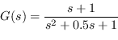

Next: Conclusions Up: Open Loop LTI Systems Previous: Step response Contents Index
This tool allows:
Also in this developed tool additional information is presented, as
Example 3
It is pretend to obtain the open-loop response to the step and delta for the transfer function,
|  | (3.6) |
% packages are loaded.
pkg load control signal ltitool
% Clean memory and command window.
clear all, clc
% Complex variable "s"
s = tf("s");
% plant
Gol=(s+1)/(s^2+0.5*s+1);
% simulation parameters
k=1; % step amplitude
tFinal=20; % simulation time
% ------------------------------------------------------------------------
% Poles-Zeros Map
% ------------------------------------------------------------------------
title_string='Poles and Zeros Map of G(s)';
legend_zeros_string='Zeros of G(s)';
legend_poles_string='Poles of G(s)';
figure(1),
xpzmap(title_string,legend_zeros_string,legend_poles_string, ...
Gol.num{1,1},Gol.den{1,1});
% ------------------------------------------------------------------------
% Simulation
% ------------------------------------------------------------------------
% Step response
figure(2), OLstepresponse(Gol.num{1,1},Gol.den{1,1},k,0.0,tFinal,1000);
% Impulse response
figure(3), OLimpulseresponse(Gol.num{1,1},Gol.den{1,1},0.0,tFinal,1000);
% ------------------------------------------------------------------------
% Additional information
% ------------------------------------------------------------------------
[stability,yinf,Test]=additionalinfo(Gol.num{1,1},Gol.den{1,1}, ...
tFinal,1000)
The command window reports
>> stability = Asympt. Stable >> yinf = 1 >> Test = 16.060
Notice that in the case of the step response, the command window reports that yinf=1while for the impulse response yinf=0.
Example 4
The same example can be solved directly by invoking the analysis and simulation window of open-loop linear systems, simply by typing in the command window,
>> pkg load control signal ltitool, >> oLWnd;and then Octave will present the window that it shows in Fig. 3.4.
Notice that,
By way of example, the Fig. 3.5 shows the step response along with the additional information about stability, reached steady state value and settling time.
|
|